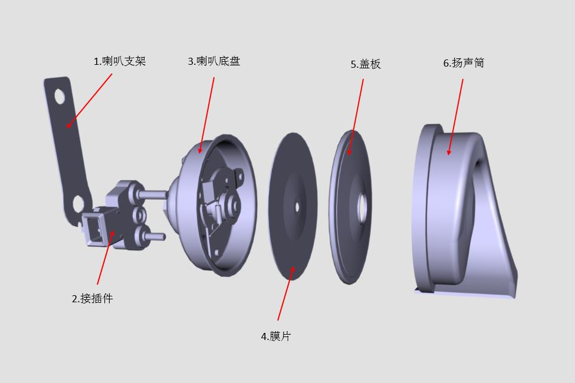
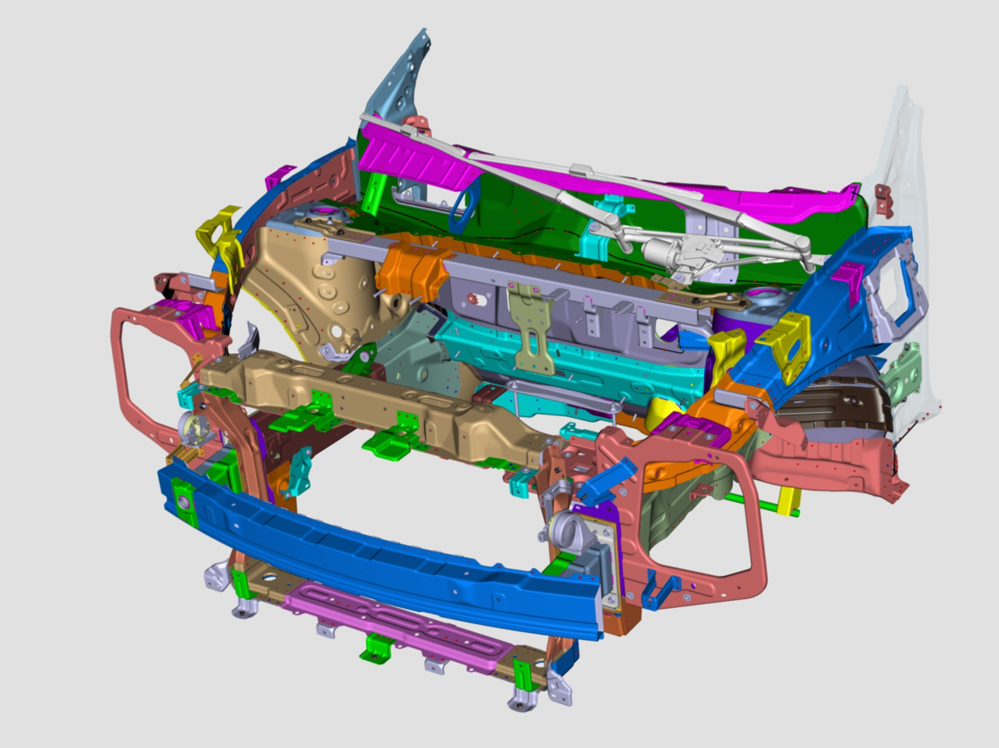
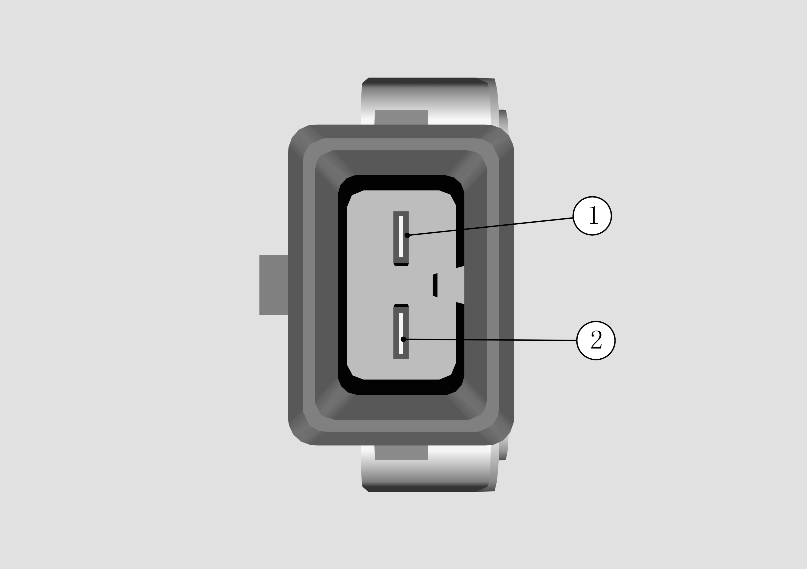

Функция
Звуковой сигнал: обычно устанавливается на переднем верхнем элементе или переднем модуле и используется для предупреждения пешеходов и других транспортных средств с целью привлечения внимания и обеспечения безопасности дорожного движения.
Принцип работы
Звуковой сигнал использует собственную механическую конструкцию (структуру верхнего и нижнего рычагов контактов) для преобразования постоянного тока в импульсный, после чего с помощью электромагнита приводит внутреннюю диафрагму в возвратно-поступательное движение для создания звука, который распространяется по спиральному каналу рупора по определенным законам и излучается в звуковой порт.
Конструкция изделия
1. Одиночный элемент и конструкция

2. Конструкция компоновки
Звуковой сигнал расположен на боковых сторонах передней рамы.

3. Назначение контактов разъема

Примечание: 1 — положительный вывод, 2 — отрицательный вывод